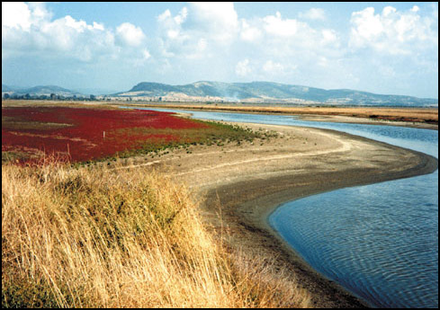
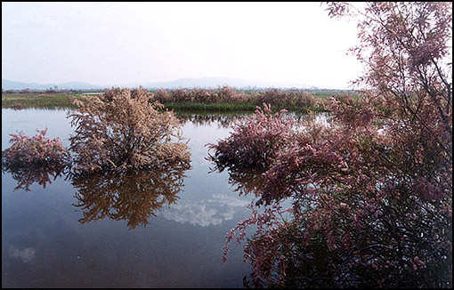
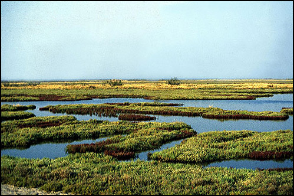

Το πλέον σύνηθες μέρος για να συναντήσουμε ένα παράκτιο υγρότοπο είναι οι εκβολές μεγάλων ποταμών, τα γνωστά ως δέλτα ποταμών. Εκεί εναποτίθενται στη θάλασσα η ιλύς, η άμμος - τα φερτά υλικά - που μεταφέρονται με τα νερά των ποταμών ενώ οι κυματισμοί της θάλασσας τα μεταφέρουν ελεύθερα, δημιουργώντας έτσι τους αμμόλοφους (αμμοθίνες), έλη ή και νέα τμήματα γης - "σφήνες" μέσα στη θάλασσα..
Μέσα στο δέλτα, το ποτάμι χωρίζεται σε κανάλια τα οποία αλλάσουν την ταχύτητα της ροής του ποταμού, σχηματίζουν μαιάνδρους με αμμώδεις ακτές ή και με χονδροχάλικο από τις υπερχειλίσεις του ποταμού, έλη, λίμνες, τα οποία σχηματίζονται και εξελίσσονται μετά από πολλά χρόνια, από την τροφοδοσία του ίδιου του ποταμού. Το κυρίως ποτάμι μπορεί από μόνο του να αλλάζει την κοίτη του δημιουργώντας έτσι μοναδικούς υγροτόπους στις παλιές κοίτες. Αυτό είναι ένα φυσικό δέλτα γλυκών νερών το οποίο περιλαμβάνει μια σειρά διαφορετικών τύπων υγροτόπων και το οποίο γίνεται περισσότερο αλμυρό όσο πλησιάζουμε προς τη θάλασσα και δέχεται την επίδραση της αλατότητα.
Οι λίμνες γλυκού νερού σχηματίζονται είτε στην ενδοχώρα, είτε είναι παράκτιες λεκάνες οι οποίες έχουν αποκοπεί από τη θάλασσα και δέχονται γλυκά νερά ποταμών στη λεκάνη τους. Οι περισσότερες ευρωπαικές λίμνες γλυκού νερού μόνιμα αλλά ιδιαίτερα στις μεσογειακές περιοχές της νοτίου Ευρώπης είναι περισσότερο διαδεδομένες οι εποχιακές λίμνες με υφάλμυρο νερό. Στις ρηχές όχθες των λιμνών, με την διείσδυση του φωτός, αναπτύσσεται πλούσια βλάστηση η οποία δημιουργεί ζώνες μεταβατικές από το ανοικτό νερό στη ξηρά στα ενδότερα.
Οι βάλτοι αυτοί συνήθως κυριαρχούν όπου υπάρχει γλυκό νερό, επιφανειακές πηγές, χείμαρροι, ρέματα τα οποία πλημμυρίζουν συχνά και κρατούν το γλυκό νερό σε ρηχές εκτάσεις. Μερικοί βάλτοι διατηρούν το νερό το περισσότερο διάστημα του έτους και συχνά αναπτύσσονται σε μεγάλη έκταση καλαμώνες και υγρά λιβάδια.
Εκτός από τις περιοχές που πλημμυρίζουν και επηρεάζονται από τα γλυκά νερά των ποταμών, υπάρχει μια ποικιλία υγρών ενδιαιτημάτων κατά μήκος των ομαλών και επίπεδων ακτών.
Τα θαλάσσια κύματα μετακινούν την άμμο και τα μικρά χαλίκια προς τον χώρο της παλινδρόμησής τους και τα αποθέτουν στο μπροστινό τμήμα της ακτής παράλληλα με την αυτήν. Οταν η θάλασσα ηρεμίσει τότε φαίνεται η ράχη από υλικό που προεξέχει ενώ πίσω της έχει σηματιστεί κοίλωμα που περικλείει - παγιδεύει θαλασσινό νερό, αυτό είναι που καλείται λαγγούνα ή λιμνοθάλασσα. Συνήθως οι λαγγούνες συνδέονται με κανάλι με τη θάλασσα και μπορεί επίσης να τροφοδοτείται και με νερά του ποταμού. Με την πάροδο ετών καθώς η άμμος εναποτίθεται και εκτείνεται, μερικές λαγγούνες αποκόπτονται τελείως από τη θάλασσα και γίνονται λίμνες γλυκού νερού ή πάλι ξεραίνονται κατά τη διάρκεια του καλοκαιριού αφού δεν υπάρχει τροφοδότηση με νερά.
Οι αλμυρόβαλτοι περιβάλλουν τις λιμνοθάλασσες ή καταλαμβάνουν τις περιοχές πίσω από τις ακτές. Μπορούν όμως να διατηρηθούν και σε εσωτερικές περιοχές αρκετά μακριά από το αλμυρό νερό εφόσον υπάρχει υπόγειο
αλμυρό νερό που τους τροφοδοτεί. Η θάλασσα συχνά εισέρχεται υπογείως όταν τα εδάφη είναι πορώδη σε περιοχές στο εσωτερικό του υγροτόπου. Αυτό συνήθως συμβαίνει όταν δεν υπάρχει το επιφανειακό γλυκό νερό ή όταν το υπόγειο γλυκό νερό υπεραντλείται για τις γεωργικές αρδεύσεις με αποτέλεσμα να κατεβαίνει πολύ χαμηλά η υπόγεια στάθμη του γλυκού νερού και το κενό που δημιουργείται να καταλαμβάνεται από το αλμυρό νερό της θάλασσας.
Οι εποχιακές πλημμύρες των εκτάσεων που περιλαμβάνονται μεταξύ των οχθών των ποταμών και της υπερυψωμένης ξηράς ( κοίτες ποταμών) έχουν κοινό μέλλον για όλα τα ευρωπαικά ποτάμια και ρέματα. Τα υγροτοπικά αυτά συστήματα τα οποία κάποτε πλημμύριζαν με γλυκό νερό, συστηματικά αποστραγγίζονται κατά τα τελευταία 2000 χρόνια. Πολλοί λίγοι ποταμοί έχουν απομείνει οι οποίοι εξακολουθούν να πλημμυρίζουν τις κοίτες τους, να διατηρούν αμμώδεις όχθες, υγρά λιβάδια, βάλτους, πλημμυρισμένα δάση και λιμνούλες.
Τα εκτεταμένα παρόχθια δάση από ιτιές και λεύκες, τα οποία κάποτε εκτεινόταν μέχρι τις εκβολές των ποταμών, ιδιαίτερα σε δέλτα, έχουν ελαττωθεί και έχουν περιοριστεί σε μικρές συστάδες. Η υποβάθμιση αυτή αυξάνεται με τις ευθυγραμμίσεις της κοίτης των ποταμών, τις αμμοληψίες και τις εκβαθύνσεις των καναλιών.
Οι ανθρώπινες δραστηριότητες, τόσο κατά το παρελθόν όσο και σήμερα, έχουν αναπτύξει ένα διαφορετικό τύπο υγροτόπου, ανθρωπογενή, ο οποίος δημιουργεί ιδιαίτερο ενδιαφέρον για ορισμένα είδη φυτών και ζώων: